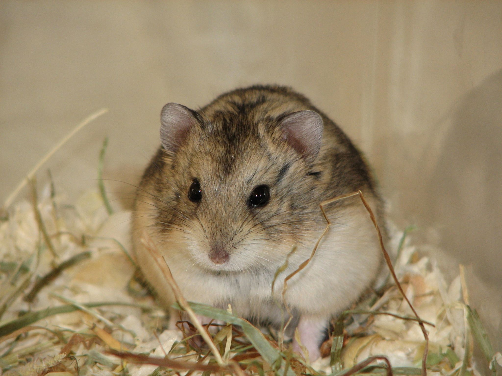

Хомяки Кемпбелла
Хомячок Кэмпбелла (лат. Phodopus campbelli) — представитель рода Мохноногие хомячки. Видовое название дано в честь члена британской консульской службы в Китае Чарльза Уильяма Кэмпбелла (1861—1927), который собрал образцы хомяка на китайско-русской границе в 1904 году.
Внешний вид

Несмотря на сходство с представителями джунгарской породы, у хомяка Кемпбелла есть целый ряд особенностей:
- Длина тела составляет 7-10 см при весе 25-50 г.
- Голова округлая, с заостренной мордочкой. В узолках рта имеются железистые мешочки, в которых вырабатывается особый секрет со спецефическим резким запахом.
- Уши небольшие, аккуратные.
- Глаза блестящие, маленькие. Могут быть окрашены в черный или красный цвет.
- Тело плотное, при осмотре сверху напоминает цифру "8".
- Хвост короткий, практически незаметный.
- Шерсть густая, торчит в разных направлениях.
- Окрас агути и селф.
Среда обитания
В дикой природе хомячки Кэмпбелла обитают в пустынных местах Казахстана, Китая, Туркменистана и Монголии, можно встретить их и на просторах России в Туве, Бурятии и Забайкалье. Эти грызуны предпочитают жить парами или небольшими колониями с вожаком во главе. Зверьки отдают предпочтение ночному образу жизни, не впадают в зимнюю спячку и не меняют цвет шубки перед приходом холодов. Укрываются в норках глубиной до 1 метра, которые выстилают шерстью, листьями и сухой травой.
Питание
Хомячки Кэмпбелла всеядны, в дикой природе питаются в основном семенами и насекомыми.
Как содержать в домашних услвиях хомяка Кемпбелла?
Вернуться на главную страницу